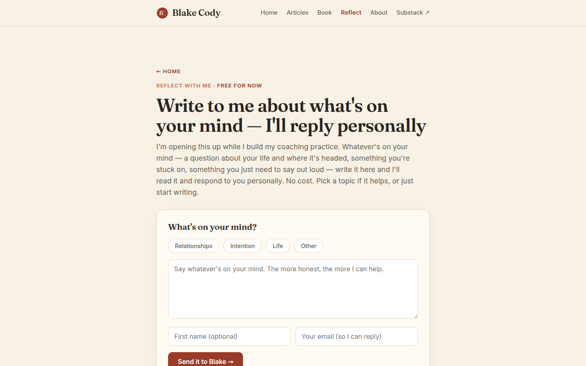

blakecody.com — UI & visual design audit / change log
/reflect.html
Comparing against the page-04 SEO report, implemented in main 32fcad7:
.reflect-note, at the send button — C31 exactly as proposed..cat "Relationships" 126 × 35 .cat "Intention" 94 × 35 .cat "Life" 59 × 35 ← smallest interactive element on the site .cat "Other" 73 × 35 .reflect-submit 184 × 46 ✓ correct total elements under 44px on this page: 17 — the most of any page
The chips are the first interaction on the page and the one most likely to be used on a phone, where a person is choosing a topic before typing something personal with their thumbs. At 35px tall they sit below the 44px comfortable floor, and "Life" at 59×35 is small enough to be genuinely fiddly.
They also sit 8px apart, so the failure mode is not just a miss — it is selecting "Intention" when you meant "Life", on a form where the topic routes what you get back.
Fix.cat {
min-height: 44px; /* 35 → 44 */
min-width: 72px; /* rescues "Life" */
padding: 10px 18px;
}
.reflect-cats { gap: 10px; } /* 8 → 10, so a miss lands on nothing */
The visual change is small — the chips get slightly taller and rounder — and the design reads the same.
A refinement to R2 from the page-01 report, which counted every sub-44px element site-wide: WCAG 2.5.8 explicitly exempts links inline in a sentence, so prose links do not need enlarging. The finding applies to standalone controls — these chips, nav links, and arrow CTAs — not to every underlined word. That makes it a smaller and more actionable job than the raw count suggested.
Measured: .cat text is --ink-soft #6b5f52 at 6.21 contrast — readable — inside a thin outline on the card surface. There is no fill, no icon, and no depth.
Combined with their small size, the resting state reads closer to a set of tags describing the form than to four buttons inviting a choice. On touch there is no hover to correct that impression, so a phone user may simply not register them as tappable and skip to the textarea — which is exactly the field where they would most benefit from having narrowed the topic first.
Fix--bg against the card's --bg-card) so they read as raised rather than outlined.--accent, white text. Currently selection is a border-colour change, which is the weakest available signal and invisible to anyone who cannot distinguish those two browns.aria-pressed (T30 in the SEO report) so the state is exposed to screen readers as well as visible.Measured: .eyebrow "← HOME" at #c46a4f, 13.1px, ratio 3.38 — fails AA.
Note the near miss right beside it: .coaching-free ("Free for now") renders #9a3b27 at 6.17 and passes. Two eyebrow-scale labels, adjacent, one readable and one not. The fix is the same token change that closes five pages at once.
alert() LowSame as U12 on the book page. The success path reveals a designed card; the failure path throws an OS dialog on top of a carefully made page — at the moment when somebody has just written something personal and it did not send.
That is the worst possible moment for the interface to stop feeling like yours. Replace with an inline message inside the form card, using the text already written.
Measured: rows="6", fixed height. The placeholder invites depth — "Say whatever's on your mind. The more honest, the more I can help." — and then the box stops at six lines and starts scrolling, so a person writing something long loses sight of their own opening.
Auto-growing it costs a few lines and quietly signals that a long answer is welcome:
const ta = document.getElementById("reflect-answer");
ta?.addEventListener("input", () => {
ta.style.height = "auto";
ta.style.height = Math.min(ta.scrollHeight, 480) + "px";
});
| Check | Result |
|---|---|
| Page depth | 1440 → 1,985px (2.21 folds) · 820 → 1,976px (1.67) · 390 → 2,559px (3.03) |
| Headings | H1 (44.8px) → H2 ×4 — clean |
| Buttons | .reflect-submit 184×46 ✓ · .sub-submit 136×46 ✓ · .cat chips 126/94/59/73 × 35 |
| Elements under 44px | 17 — highest on the site; the chips are the actionable subset |
| Contrast | intro 5.52 ✓ · note 5.97 ✓ · chips 6.21 ✓ · "Free for now" 6.17 ✓ · .eyebrow 3.38 fail |
| Mobile nav | clientW 170 · scrollW 385 · 3 items off-screen (R1) |
| Content column | .wrap 720px (V1) |
| Focus ring | browser default (R3) |
UI page 04 of 7 complete.
blakecody.com UI change log · generated 7 September 2026